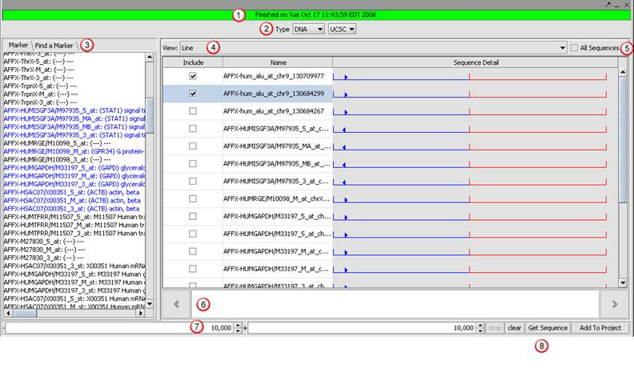
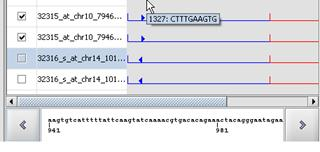

The Sequence Retriever is located in the top-right of the application in the Visualization Area. This component retrieves sequences from the network for a subset of markers in an activated marker set. Sequences found can be added to Project folder as a sequence dataset and viewed in the Promoter Panel, Sequence Panel and Position Histogram. This help topic covers basic usage, obtaining sequence data and navigating results.

The steps of basic usage are indicated in the screenshot above:
1. Progress Indicator: Indicates sequence retrieval status.
2. Type: Sequence type selection (DNA or Protein). Source: Data source selection.
3. Markers: The subset of markers in the activated marker set. In the Find Marker tab, a partial marker name search results in a list of markers that include the text entered.
4. View: Sequence display selection of the Line View or Full Sequence. The line view displays each sequence as a line proportional to its length, preceded by the sequence ID. The Full Sequence displays each sequence as full character strings by the sequence ID.
5. All Sequence: No longer applicable. This checkbox has been removed from the application.
6. The left and right arrows icons that can be used to control the display of the character string.
7. Region: Valid for retrieving DNA sequence, these text boxes define the length of retrieved sequence.
8. Operations:
。Stop: Stops an ongoing retrieval attempt.
。Clear: Clears the display of sequences retrieved.
。Get Sequence: Click onGet Sequence to retrieve sequences.
。Add to Project: Click Add to Project to save the sequences as a FASTA dataset in the project folder.
1. Load a Microarray file in the project folder.
2. In the Sequence Retrieval visualization, select sequence type and source.
3. (DNA)Define the upstream/downstream regions.
4. Activate a marker set(s) of interest or find a specific marker to retrieve sequence data by:
。In the Sequence Retrieval visualization, click Find Marker.
。 Enter the marker name or a portion of the marker name in the search field and click Find. The system will search the loaded Microarray file for markers that include the text entered. If markers are found, the user is prompted to indicate if sequences should be retrieved for the marker located.
5. Click Get Sequence. For DNA, the system will prompt you to select a genome assembly from a drop down list. The system attempts to retrieve sequence data from the data source specified. If found, sequences will be displayed in the visualization area.
。 Sequence string display: Single click on the sequence string to display the character strings of the section of the sequence string selected. The display of sequence details is proportional to the click position in the line. If you click at the beginning of the line, the bottom will show the first part of the sequence. If you click the center place of a line, the Sequence display will show the middle part of whole sequence.
。 Limiting display: Scroll over a marker name in the Marker list box and the tooltip indicates the number of sequences retrieved for the specific marker. To limit the sequences displayed to a specific marker, click on the marker name of interest in the Marker list box. This marker name should be displayed in blue font which indicates sequence have retrieved for the marker. The sequence display is then limited to sequences retrieved for the selected marker. Select the All Sequence checkbox to return the display to the sequences retrieved.
。Creating a dataset: Each retrieved sequence shall have a selection checkbox to allow users to select which sequences will be added to the project when the Add to Project button is selected. The selected retrieved sequences are added to the project panel as a FASTA file.
。 Negative String / Positive String indicator: The line view includes arrows to indicate if the sequence is on the Negative (left arrow) or Positive string (right).
